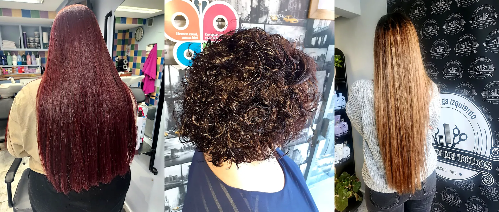

Zerbitzuen karta
Zuregatik egin dezakegun guztia
Ile-apainketa eta estilismoa, ile-terapia aurreratuak eta estetika eta gorputzaren ongizatea. Zerbitzu bakoitza gauza berarekin hasten da: zu entzutearekin.
10 zerbitzu
Ile-apainketa eta estilismoa
Ile-mozketa, kolorea eta orrazkera, benetako aholkularitzarekin
 Irudi-aholkularitza eta bisajismoaZure aurpegiko ezaugarriak, ilearen testura eta egunerokoa aztertzen ditugu, ondo datorkizun eta etxean orrazten jakingo duzun ile-mozketa eta kolorea diseinatzeko.
Irudi-aholkularitza eta bisajismoaZure aurpegiko ezaugarriak, ilearen testura eta egunerokoa aztertzen ditugu, ondo datorkizun eta etxean orrazten jakingo duzun ile-mozketa eta kolorea diseinatzeko.
 Emakume, gizon eta txikientzako ile-mozketakKlasikoak eta modernoak, emakumeentzat, gizonentzat, unisex eta txikienentzat. Ile-mozketa bakoitza zure aurpegirako, testurarako eta bizi-erritmorako pentsatua.
Emakume, gizon eta txikientzako ile-mozketakKlasikoak eta modernoak, emakumeentzat, gizonentzat, unisex eta txikienentzat. Ile-mozketa bakoitza zure aurpegirako, testurarako eta bizi-erritmorako pentsatua.
 Koloreztatzea eta ileurdinen estalduraTindagai iraunkorrak eta erdi-iraunkorrak, ñabardurak, islak eta presaka zabiltzanean ileurdinak estaltzeko zerbitzu expressa. Kolorean aditu, zuregan aditu.
Koloreztatzea eta ileurdinen estalduraTindagai iraunkorrak eta erdi-iraunkorrak, ñabardurak, islak eta presaka zabiltzanean ileurdinak estaltzeko zerbitzu expressa. Kolorean aditu, zuregan aditu.
 Metxak, balayagea eta islakMetxa tradizionalak, balayagea, premium eta vintage metxak, islak eta ñabardura pertsonalizatuak. Ilehorietan, beigeetan eta tonu biziean adituak, hidratazioa zainduz.
Metxak, balayagea eta islakMetxa tradizionalak, balayagea, premium eta vintage metxak, islak eta ñabardura pertsonalizatuak. Ilehorietan, beigeetan eta tonu biziean adituak, hidratazioa zainduz.
 Fantasiazko koloreakArrosa pastela, urdin elektrikoa, sirena-berdea, mertxika, lila edo gorri bizi bat. Fantasiazko kolore biziak, uniformeak eta zure ilearen osasuna arriskuan jarri gabe.
Fantasiazko koloreakArrosa pastela, urdin elektrikoa, sirena-berdea, mertxika, lila edo gorri bizi bat. Fantasiazko kolore biziak, uniformeak eta zure ilearen osasuna arriskuan jarri gabe.
 Landare-koloreztatzea landareekin eta buztinekin Izarra% 100 landare-koloreztatzea henna, indigo, cassia eta amlarekin. Amoniakorik, PPDrik eta erresortzinolik gabe. Ileurdinak estaltzen ditu isla naturalekin eta distira terapeutikoa uzten du.
Landare-koloreztatzea landareekin eta buztinekin Izarra% 100 landare-koloreztatzea henna, indigo, cassia eta amlarekin. Amoniakorik, PPDrik eta erresortzinolik gabe. Ileurdinak estaltzen ditu isla naturalekin eta distira terapeutikoa uzten du.
 Leuntzeak eta keratina, frizzaren aurkaKeratina-tratamenduak eta leuntze profesionalak, bolumena kontrolatzen dutenak, frizza kentzen dutenak eta kutikula hezetasunaren aurka zigilatzen dutenak. «Ispilu-leun» ospetsua.
Leuntzeak eta keratina, frizzaren aurkaKeratina-tratamenduak eta leuntze profesionalak, bolumena kontrolatzen dutenak, frizza kentzen dutenak eta kutikula hezetasunaren aurka zigilatzen dutenak. «Ispilu-leun» ospetsua.
 Kizkurrak, permanenteak eta moldeatuakKizkur naturalerako ile-mozketak, permanenteak eta iraupen luzeko moldeatuak. Badakigu ile kizkurrak mimoa, teknika eta produktu espezifikoak behar dituela.
Kizkurrak, permanenteak eta moldeatuakKizkur naturalerako ile-mozketak, permanenteak eta iraupen luzeko moldeatuak. Badakigu ile kizkurrak mimoa, teknika eta produktu espezifikoak behar dituela.
 Bildumak, ezkongaiak eta ekitaldiakBildumak, orrazkerak eta makillajea ezteietarako, jaunartzeetarako, bataioetarako eta ospakizunetarako. Ezkongaientzat, aurretiko proba eta aholkularitza pertsonalizatua. Naturala, dotorea eta estresik gabe.
Bildumak, ezkongaiak eta ekitaldiakBildumak, orrazkerak eta makillajea ezteietarako, jaunartzeetarako, bataioetarako eta ospakizunetarako. Ezkongaientzat, aurretiko proba eta aholkularitza pertsonalizatua. Naturala, dotorea eta estresik gabe.
 Elikadura- eta hidratazio-tratamenduakHidratazio sakona, elikadura intentsiboa eta tratamendu pertsonalizatuak kaltetutako, lehortutako, deshidratatutako edo eguzkiak, kloroak edo koloreak zigortutako ileentzat.
Elikadura- eta hidratazio-tratamenduakHidratazio sakona, elikadura intentsiboa eta tratamendu pertsonalizatuak kaltetutako, lehortutako, deshidratatutako edo eguzkiak, kloroak edo koloreak zigortutako ileentzat.
2 zerbitzu
Ile-terapiak
Diagnostikoa eta teknologia buru-larruazal osasuntsu baterako
 Ile-diagnostiko pertsonalizatuaZure ile-hariaren eta buru-larruazalaren osasuna sakon aztertzen dugu edozein esku-hartzeren aurretik, behar duzun errutina berreraikitzaile zehatza eskaintzeko.
Ile-diagnostiko pertsonalizatuaZure ile-hariaren eta buru-larruazalaren osasuna sakon aztertzen dugu edozein esku-hartzeren aurretik, behar duzun errutina berreraikitzaile zehatza eskaintzeko.
 Ile-laser bioestimulatzaileaArgi-teknologia, ile-erorketa geldiarazten, ile-folikulua estimulatzen, zuntza errotik birsortzen eta buru-larruazala osasuntzen laguntzeko diseinatua.
Ile-laser bioestimulatzaileaArgi-teknologia, ile-erorketa geldiarazten, ile-folikulua estimulatzen, zuntza errotik birsortzen eta buru-larruazala osasuntzen laguntzeko diseinatua.
3 zerbitzu
Estetika eta ongizatea
Gorputzaren zaintzak, apaindegi berean
 PresoterapiaPresio kontrolatuko botekin egindako masaje pneumatikoa, drainatze linfatikoa aktibatzen duena, hanken astuntasuna arintzen duena, likido-atxikipena murrizten duena eta zelulitisarekin laguntzen duena.
PresoterapiaPresio kontrolatuko botekin egindako masaje pneumatikoa, drainatze linfatikoa aktibatzen duena, hanken astuntasuna arintzen duena, likido-atxikipena murrizten duena eta zelulitisarekin laguntzen duena.
 SolariumaBrontzeztatze-kabina araututa, urtaroa edozein dela ere tonu urrekara, uniforme eta osasuntsua lortzeko, eroso, seguru eta presarik gabe.
SolariumaBrontzeztatze-kabina araututa, urtaroa edozein dela ere tonu urrekara, uniforme eta osasuntsua lortzeko, eroso, seguru eta presarik gabe.
 Laser bidezko depilazioaAzken belaunaldiko laser bidezko depilazioa gure hileko saioan (astelehen goiz batean). Azal mota guztietarako tratamendu pertsonalizatuak. Plaza mugatuak.
Laser bidezko depilazioaAzken belaunaldiko laser bidezko depilazioa gure hileko saioan (astelehen goiz batean). Azal mota guztietarako tratamendu pertsonalizatuak. Plaza mugatuak.
Abantailak
Bonuak, konbinazioak eta xehetasunak
Presoterapia + kolorea
Gehitu zure koloreztatzeari 5 € gehiagoren truke soilik, eta lasai egon tindagaiak eragiten duen bitartean.
Kolore-bonuak
Aldizka tindatzen denarentzat: erosoak, merkeak eta zure erritmora egokituak.
Presoterapia eta solarium bonuak
Jarraitasun handiagoa, emaitza hobeak eta prezio hobea.
Kolore express
Zure ileurdinak denbora gutxian estaltzen ditugu, kalitateari uko egin gabe.
Aurretiko diagnostikoa
Buru-larruazala eta zuntza ebaluatzen ditugu edozein produktu kimiko aplikatu aurretik.
Wi-Fi doakoa
Zure itxaronaldietarako eta esposizio-denboretarako.
Yunsey Professional, Salerm Cosmetics eta Alfaparf bezalako marka profesionalekin lan egiten dugu, baita % 100 landare-koloreztatzearekin eta -kosmetikarekin ere.
Hitzordua emango dizugu?
Idatziguzu WhatsAppez eta besaulkian dagoen bezeroarekin amaitu bezain laster erantzungo dizugu.